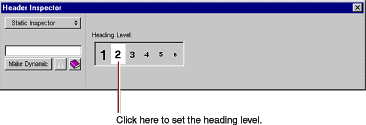
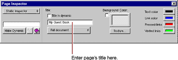
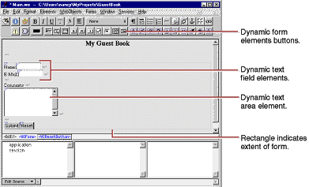
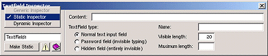

| PATH |

A web page consists of elements. In addition to the standard static HTML elements found in all web pages, WebObjects allows you to create dynamic elements, whose look and behavior are determined at runtime.
To create elements, you use the toolbar buttons. There are three groups of buttons:
. Use
these buttons to create paragraphs, lists, images, and other static
HTML elements.. Use
these buttons to create form elements in which users enter information.
WebObjects gives your application access to the data entered by
users by allowing you to associate, or bind,
these elements to variables in your application.. Use
these buttons to create other dynamic elements, that you can bind
to variables and methods in your program to control how they are
displayed. Some of these (such as hyperlinks) have direct HTML equivalents.
Others are abstract dynamic elements, such
as repetitions and conditionals, that determine how many times an
element is displayed or whether it is displayed at all.The simplest way to add text to a page is to type it directly into the component's window. To demonstrate this, add a title for the GuestBook's page.
The text is displayed at the insertion point, in this case at the beginning of the page.
![[image: ../Art/heading.gif]](../Art/heading.gif) button
in the toolbar. This converts the selected text to a heading element and
displays it in a larger font.
button
in the toolbar. This converts the selected text to a heading element and
displays it in a larger font.![[image: ../Art/justificationicon.gif]](../Art/justificationicon.gif) pop-up list in the toolbar,
choose center justification.
pop-up list in the toolbar,
choose center justification.The toolbar also has buttons that allow you to apply text styles such as bold, underline, and italics.
HTML provides several levels of headings. To change the level, you use the Inspector panel. You'll use this panel frequently throughout these tutorials.
You use the Inspector panel to set properties of the elements in your component. The Inspector's title and contents reflect the element you've selected in the component window.
A panel titled Heading Inspector appears. It allows you to set the level of the heading.
The text is now part of an <H2> tag, and is displayed in a smaller font.
Each element has its own Inspector that allows you to set properties appropriate for the element. The Page Inspector allows you to set properties such as the page's title and its text color.

Note: Be
sure to press Enter after typing in the title; otherwise, it won't
"stick."
Although WebObjects Builder supports undo, it is always a good idea to save your work frequently.
In this section, you'll create a form with several elements to capture input from a guest. The Submit and Reset buttons you add to the form will apply to all other elements in the form. These elements look and act like HTML form elements but are actually dynamic WebObjects elements, that enable your code to receive and manipulate the data entered by the user. Refer to the screen shot that follows these steps to see how the window should look.
![[image: ../Art/woform.gif]](../Art/woform.gif) .
. WebObjects Builder adds a form element to your component. The triangle at the upper-left corner indicates that it is a dynamic form, as opposed to a static form.The gray border indicates the extent of the form. You can increase its size by adding elements inside it.
This text replaces the word "Form" that was displayed by default.
You have just entered three lines (and a blank line) of static text inside the form. Now you'll enter some dynamic elements to receive input from the user: two text fields and a multi-line text area.
![[image: ../Art/wosubmitbutton.gif]](../Art/wosubmitbutton.gif) to
create a Submit button, used to send the data in the form to the
server.
to
create a Submit button, used to send the data in the form to the
server.The window should now look like this:

The text fields and text area are a bit small, so you'll resize them using the Inspector panel.
To inspect an element, you must first select it. Some elements (such as text fields and text areas) can be selected simply by clicking them; they appear shaded.
You select text elements as you would in most text-editing applications (by dragging, or by double-clicking words, or by triple-clicking lines); they appear highlighted when selected.

All WebObjects elements have a dynamic inspector, that is, one that allows you to set bindings (you'll work with bindings in the next section). In addition, many WebObjects elements (those with direct counterparts in static HTML) also have a static inspector. This inspector allows you to set the standard HTML attributes for that type of element.
In this panel, you can set various attributes of the static counterpart of a WOTextField, which is an HTML <INPUT TYPE=TEXT> element.
In the Text Area Inspector, you can set various attributes corresponding to those of a <TEXTAREA> element.
Don't worry if you see a validation error message. That issue will be addressed in "Binding Elements".
© 2001 Apple Computer, Inc.